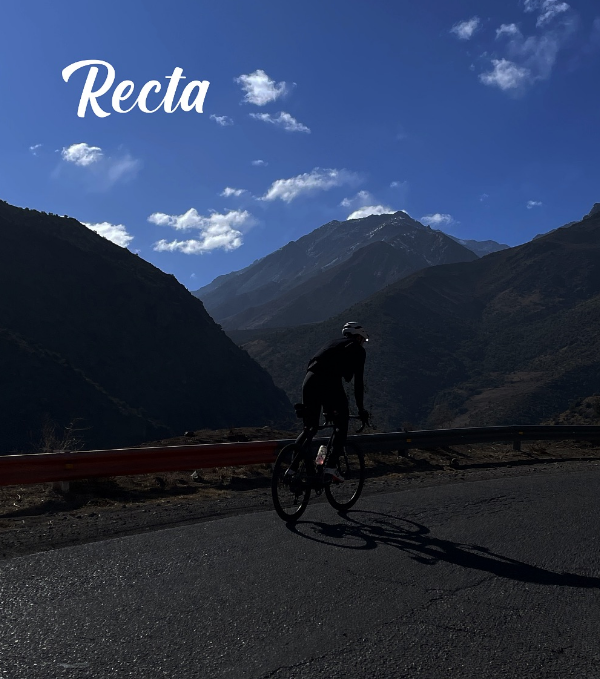

La mochila perfecta
para viajar, trabajar y explorar
Explora nuestros productos
Síguenos en redes

@rectabags

@rectabags


“De ciclista para ciclistas”
para viajar, trabajar y explorar
@rectabags
@rectabags
